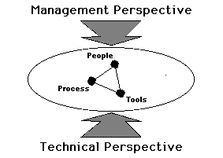
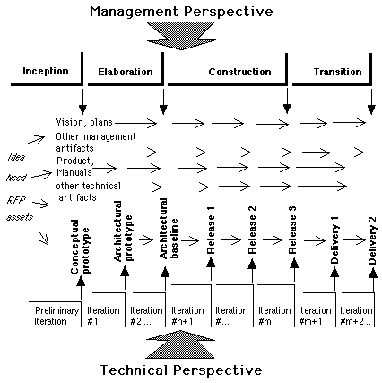
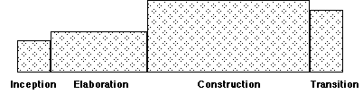
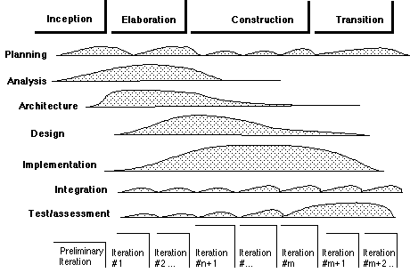
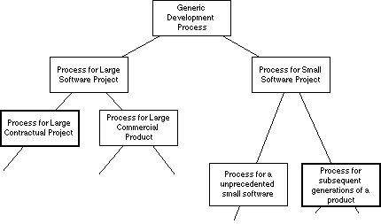
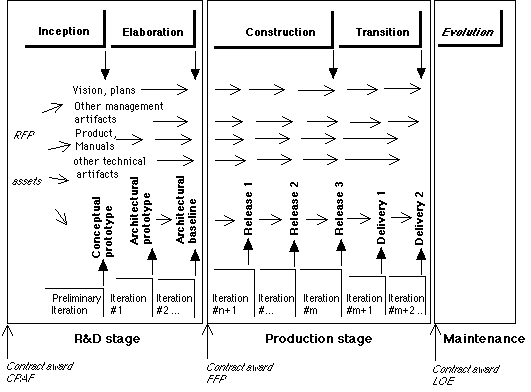

|
Rational 软件开发过程 原作 Philippe KruchtenRational Software Corp. Vancouver, B.C., Canada pbk@rational.com 翻译 waterbird[AKA]目录
1 Rational 的方式(The Rational Way) 2 软件生命周期概貌(The Overall Software Lifecycle) 两个视角（ Two Perspectives）周期和阶段（ Cycles and Phases）迭代（ Iterations ）区别（ Discriminates ）工作量和时间安排（ Effort and Schedule）3 Rational 过程的各个阶段（The Phases of the Rational Process） 起始阶段（Inception Phase ） 细化阶段（Elaboration Phase ） 构造阶段（Construction Phase ） 发放阶段（Transition Phase ） 演变周期（Evolution Cycles） 4 Rational 过程的各种活动（Activities in the Rational Process ） 5 生命周期的产出（Lifecycle Artifacts） 管理类产出（Management Artifacts ） 技术类产出（Technical Artifacts ） 需求（Requirements） 6 示例（Examples of Rational Processes） 用于大型合同软件开发的Rational过程 （Rational Process for Large Contractual Software Development ） 用于小型商业软件开发的Rational过程 （Rational Process for a Small Commercial Software Product） 7 结束语（Conclusion ） 8 附录（Annexes ） 参考文献（References ） 相关读物（Further Readings ） 词汇表（Glossary ） 简称（Acronyms ） 阶段图（Phase Map ） 作者介绍(About the Author ) 1. Rational 的方式（The Rational Way）Rational 的方式具有以下特点:
它是可裁剪的，适用于各种规模、各个应用领域的软件产品和软件项目的开发。它紧紧围绕以下三个中心：
本文描述Rational 软件开发过程的理论和结构。 2. 软件生命周期概貌（The Overall Software Lifecycle）2.1 两种视角（Two Perspectives ） Rational 软件开发过程可以从两种不同又相关的视角加以观察： <1> 从管理的角度来看(A management perspective), 涉及财政、整体战略、商务和人的方面 <2> 从技术的角度来看(A technical perspective), 涉及质量、工程和设计实现的方面  2.2 周期和阶段（Cycles and Phases） 从管理的角度，即从商务和经济的角度来看，对应项目的进展，软件的生命周期包含四个主要阶段: 起始阶段（ Inception）-- 有一个好的idea, 详细构想出最终产品的蓝图和它的商业案例，确定项目的范围（scope of the project）[1]。细化阶段（ Elaboration）--计划基本的活动和所需资源，详细确定软件特性，设计软件结构 [2]。构造阶段（ Construction）-- 构造产品， 演化产品的蓝图、结构和计划，直到一个可以交付用户的产品完成。交付阶段（ Transition）-- 将产品移交用户使用，包括：拷贝、分发、培训、支持、维护，直到用户满意。
走完这 4个阶段被称为完成了一个开发周期（a development cycle）, 它产生一代产品（a software generation）。 除非产品的生命结束， 一个现存产品可以通过重复下一个相同的起始、细化、构造和交付四阶段演进为下一代产品。 这个时期我们称之为演化(evolution)。最后伴随着产品经过几个周期的演化，新一代产品也不断被制造出来。例如，演化周期可能因为用户建议增强功能、用户环境的改变、技术的变化和对竞争的反应而被启动。
实际中，周期之间会有轻微重叠：起始阶段和细化阶段可能回在上一个周期的交付阶段未结束就开始了。 2.3 Iterations
一次迭代 (iteration)包括以下活动： 计划、分析、设计、实施、测试。 根据迭代在开发周期中所处位置的不同，这些活动分别占不同的比例。管理的角度和技术角度之间是协调的， 而且各个阶段（phases）的结束还和各次迭代（iterations）的结束保持同步。 换句话说，每个阶段可以分为一次或多次迭代过程。
(注意：本图中每阶段的迭代数目仅为示意) 但是，这两个角度 --管理的和技术的--不仅仅只是保持同步，它们还具有一些完全相同的里程碑，它们共同贡献出一些随时间演化的产品和产出。 一些产出更多地在技术方面控制之下，另一些产出更多地在管理方面的控制之下。见第五节。得到这些产出以及这些产品、产出是否满足测试评估标准，构成了这些里程碑的主要内容。它们不仅仅是日历牌上的日期，更加看的见，摸的着。 象周期一样，迭代之间也会有轻微重叠。即第 N次迭代的计划和架构在第N-1次迭代还未结束时就开始了。有时候，迭代也会平行进行：一个工作于系统某一部分的小组，可能在某个迭代内没有可发布的产出。
2.4 区别（Discriminants ） 对于不同的项目而言，每个阶段的侧重点，入口和出口准则，一个开发周期的各个产出，以及各次迭代的数目和长度都会不同。这主要取决于项目的四个主要特征-----项目的过程区别（process discriminants ）------起了决定作用。按照影响程度排列，它们是：
合同型项目，开发者基于某个合同规定为特定的客户开发软件 商业产品，开发者开发软件以推向市场 内部项目， 开发者和客户在同一个单位
本文首先描述适用所有类型软件开发的通用过程，然后针对某些具体应用领域提供几个例子。 .[3]2.5 工作量和时间安排（Effort and Schedule ） 各阶段在工作量和时间安排上是不同的。尽管由于不同项目类型之间相差会很大，一个典型的中等规模项目的最初开发周期可以预计为下面的比率：
如下图所示：
但是对于一个演化周期，起始阶段和细化阶段可能大大缩减。使用某些工具和方法，也可以使比起始阶段和细化阶段加一起小的多。 3. Rational 过程的各个阶段（The Phases of the Rational Process）3.1 起始阶段（Inception Phase ） 这个阶段产生一个潜在产品的最初蓝图，并把它转变为一个实际的项目。本阶段的目的是建立一个新产品或一次产品更新的商业案例（business case），定义项目的范围。 对于一个新产品的开发，本阶段的主要产出是得到一“做还是不做”的决定以进入下一阶段，和投入一定的时间和金钱详细分析做什么、是否能做、以及如何去做。 对于一个现存产品的演化，这会是一个简短的阶段， 主要看用户或客户的要求、问题报告、或是新的技术动态。对于一个基于合同的开发， 是否继续做的决定取决于在特定领域的经验、以及组织在此领域的竞争力和市场情况。这里起始阶段可以归结为一个参加投标的决定，或投标活动本身。决定可能是基于一个现存的研究原型，其结构对最终软件可能合适，也可能不合适。 （入口准则） Entry criteria:需求的描述，通常采用以下形式：
（出口准则） Exit criteria:
在初试阶段结束时，我们也可能有：
3.2 细化阶段(Elaboration Phase) 本阶段的主要目的是更彻底地分析问题域，定义结构并使之稳定，确定项目的最大风险。这样在本阶段结束时，我们可以得到一个关于下 2个阶段工作的详细计划：
在这个阶段，一个可执行的结构原型（ an executable architectural prototype）被构造完成；它至少实现了初始阶段识别出的主要的“use cases” ，解决了项目的最大技术风险；根据范围、规模、风险和项目新颖程度的不同，它的完成要化一次或多次迭代。这最好是一个演化的原型，可以产生合格的代码，并将成为整体结构的基线，但是也不排除开发出一个或几个试探性的、可抛弃的原型，以降低开发的风险：对需求、可行性、人机界面、演示程序等的进一步细化。 它将成为结构的基线（the architectural baseline）。在本阶段的结束时，仍然会有一个“做还是不做”的决定， 以确定是否要真正投资构造这个产品（或参与合同项目的竞标）。 此时产生的计划一定要足够详细，风险也得以充分降低，可以对开发工作的完成进行一定准确度的成本和进度估算。（入口准则） Entry criteria:
出口准则） Exit criteria:
3.3 构造阶段（Construction Phase ） 本阶段可以划分为数次迭代---不停充实结构基线，一步步地向最终产品渐增逼近。在每次迭代过程中，上个阶段（细化阶段）的产出得到扩充和修正， 但它们最终将随系统向着正确和完整的方向的演进而稳定下来。 在这个阶段，除了软件本身，也生成一些新的产出---文档，既有内部使用的，也有面向最终用户的.。 对每次迭代，我们有： 入口准则（Entry criteria: ）
迭代计划必须阐明迭代的目标：
出口准则（ Exit criteria: ）更新了的产品和产出，再加上:
到构造阶段的后期，必须完成以下产出，和本阶段最后一个迭代特有的产出：
3.4 交付阶段（Transition Phase ） 交付阶段是把产品交到最终用户手中的阶段。 它涉及市场、打包、安装、配置、支持用户和修改错误. 从技术角度来看，伴随本阶段迭代的是一次或多次发布： `beta' 版发布, 正式版发布，修改bug , 或增强版发布。当用户对产品满意，本阶段即告结束。 例如，合同开发时正式接受， 或者产品有关的所有活动都已结束。 此时，某些积累的财富可以稍加整理，以为下一个周期或其他项目重用。入口准则（ Entry criteria: ）
出口准则（Exit criteria:）
3.5 演化周期(Evolution Cycles ) 对于较大的演化，我们迭代实施整个过程，仍从初试阶段开始一个新的周期。因为我们已经有了一个产品了，所以比起一个初次开发的产品，初试阶段可能大大缩短。细化阶段也可能缩小范围，更加关注于计划方面，而非分析或结构的演化。需要指出：周期与周期之间也会互相重叠。 较小的演化可以通过延长交付阶段或增加一两次迭代来完成。 交付阶段可以以一个终结过程而结束，即产品不再演化了，但是为了终结它，一定要有一些特定的动作。 4. Rational 过程中的活动(Activities in the Rational Process )Rational 过程中各个阶段的名称(如起始、细化、构造、交付)同在这阶段里进行的开发活动的术语名称---如分析、设计、测试等---相差甚远。 因此我们容易理解某种活动的进行并不局限于某个特定阶段，也同它的作者、标准及问题域的术语保持独立。 这些活动的确不停发生，但它们在每个阶段和每次迭代中的程度不同。下图表明了活动重点随时间的演化。
图中活动重点的变化也说明尽管每次迭代在形式上都是“相似”的，但它们的性质和内容却是随时间改变的。
 这也表明，一种活动的结束并不总意味着另一种活动的开始，即并不是分析完成了才开始设计，而是这些活动相关的“产品”在随着开发者对问题或需求的理解的加深也不断得到更新。 最后，在一个迭代过程中，计划、测试和综合（ Integration）这些活动不是集中堆积在开发活动的开始和结束阶段，而是有机地分布在整个开发周期的各个阶段、各次迭代之中。 它们并不表现为开发过程的某个独立的阶段或步骤。尽管具体的项目有具体的区别，对于一个中等规模、初次开发的典型项目，其开发周期中各种活动的比例如下： 计划和管理 (Planning and management) 15%分析 /需求(Analysis/requirements) 10%设计 /综合(Design/integration ) 15%实施 /功能测试(Implementation/functional tests) 30%测试 /评估/验收测试(Measurement/assessment/acceptance test) 15%工具 /环境/变更管理(Tools/environment/change management) 10%维护 Maintenance (fixes during development) 5%5. 生命周期产出品（Lifecycle Artifacts ）开发过程不是文档驱动的：在所有时间，它的产出中必须包括软件产品自身。文档应该十分精简，数目不能太多，应只保留那些确实从管理或技术的角度有真正价值的文档。 Rational 建议保留以下各类文档：
5.1 管理产出品（Management Artifacts ） 管理产出品不是产品，而是用来驱动或监视项目进展、估计项目风险、调整项目资源，使客户或投资者对项目保持一定的“可见性” 的。
5.2 技术产出品（Technical Artifacts ） 它们或者是交付的产品，可执行的软件及手册，或者是一些用于制造产品的蓝图、软件模型、源代码和其他有助于理解和演化产品的工程信息。
本文第 3部分中列举的输入和输出准则可以映射到这11类文档之中。上面介绍的这套文档可以依照具体项目的类型进行扩充和删减，一些文档可以合并。 文档并非一定是纸的形式---也可以是电子表格、文本文件、数据库记录、源代码的注释、超文本文档等等---但相应的信息资源必须被清楚地识别，易于访问，也要有一定的历史记录。5.3 需求（Requirements ） Rational 软件开发过程也不是需求驱动的。 在产品演化的周期中，需求表现为不同的形式： 商业案例给出了主要约束，多是些可用的资源。 项目蓝图从用户角度仅描述了系统的关键需求，它在开发过程中将缓慢演化。 更详细的需求在第二阶段（细化阶段）得以阐明，表示为 use cases 和scenarios, 并在第三阶段（构造阶段）随着对产品和用户需求了解的加深进一步完善。这些更详细的需求记录在评估标准的文档中，它们驱动了构造阶段和交付阶段迭代内容的定义， 并为迭代计划引用。6. Rational 过程示例(Examples of Rational Processes )按照 2.4节中所述的区别，Rational 过程采用不同的形式。
例子：一个开发过程的‘分类’ (a 'taxonomy' of development processes )6.1 大型合同软件开发的Rational过程（Rational Process for Large Contractual Software Development ） 对这个软件开发项目，Rational 过程分为3个阶段, 对应3个不同类型的合同。

因为用户需要更高的可视性以评估项目，还因为项目涉及大量人和组织，开发过程应更加正规化，要比小型、内部的项目更加重视书面文档产品。第 5部分介绍的11类文档都以某种形式或名称存在。6.2 小型商业软件的Rational过程（Rational Process for a Small Commercial Software Product ） 在按规模分类的过程家族的另一端，是小型的商业软件。它的流动性更强一些，只有少量的正规性， 表现为一些主要的里程碑和一套较少数目的文档。
7. 总结（Conclusion ）Rational 过程强调尽早处理风险问题，快速开发出一个系统的初始版本，定义出系统的结构。它并不假设你在项目的初试阶段有一个固定不变的需求，而是允许随着项目的演化不断细化需求。它认可并支持需求的变化。 过程不过分倚重文档或“仪式”， 它自身就解决了与软件开发相关的那些繁杂任务的自动化。重点主要放在软件产品本身，和产品的质量上，即最终用户对它的满意程度，以及它要满足的投资/回报目标上。 一个从本文描述的 Rational过程所派生的软件开发过程完全能够符合ISO 9000标准的要求。参考文献（ References ）[1] The American Heritage Dictionary defines inception as "the beginning of something, such as an undertaking, a commencement." [2] The American Heritage Dictionary defines elaboration as the process "to develop thoroughly, to express at greater length or greater detail." [3] In OO terms, the process described here is the abstract superclass. Its concrete subclasses constitute an inheritance lattice organized along the discriminants. 相关读物（ Further Readings ）B. W. Boehm, "A Spiral Model of Software Development and Enhancement," IEEE Comp., 21 (5), May 1988, pp. 61-72. G. Booch, Object Solutions: Managing the Object-Oriented Project, Addison-Wesley , Redwood City, California, 1996. M. T. Devlin, and W. E. Royce, Improving Software Economics in the Aerospace and Defense Industry, Technical paper TP-46, Rational Software Corp., Santa Clara, CA, 1995. T. Gilb, Principles of Software Engineering Management, Addison-Wesley, Wokingham, UK, 1988. W. Humphrey, Managing the Software Process, Addison-Wesley, Reading MA, 1989. P. Kruchten, "Un processus de dévelopment de logiciel itératif et centré sur l'architecture," Proceedings of the 4th International Conference on Software Engineering, Toulouse, France, December 1991, EC2. D. L. Parnas, & P. C. Clements, "A Rational Design Process: How and Why to Fake It," IEEE Trans. on Soft. Eng., SE-12 (2), February 1986, pp. 251-257. 词汇（ Glossary）产出品（ Artifact） Any document or software other than the software product itself.基线（ Baseline ） A release that is subject to change management and configuration control.构造（ Construction） The 3rd phase of the process, where the software is brought from an executable architectural baseline to the point where it is ready to make the transition to its user's community.周期（ Cycle） One complete pass through the 4 phases: inception, elaboration, construction, and transition. The span of time between the beginning of the inception phase and the end of the transition phase.细化（ Elaboration ）The 2nd phase of the process where the product vision and its architecture are defined.演化（ Evolution） The life of the software after its initial development cycle; any subsequent cycle, where the product evolve.代（ Generation） The result of one software development cycle.高可信度 (High fidelity) Sufficient accuracy (in a cost estimate, quality estimate, or schedule estimate) that a development contractor would commit to a firm, fixed price achievement.初试（ Inception） The first phase of the process, where the seed--idea, RFP, previous generation--is brought up to the point of being (at least internally) founded to enter into the elaboration phase.迭代（ Iteration） A distinct sequence of activities with a baselined plan and an evaluation criteria.里程碑（ Milestone） An event held to formally initiate and/or conclude an iteration.阶段（ Phase ）The span of time between 2 major milestones of the process where a well defined set of objectives are met, artifacts are completed, and decisions are made to move or not into the next phase.产品（ Product） The software that is the result of the development, and some of the associated artifacts (documentation, release medium, training).原型（ Prototype） A release which is not necessarily subjected to change management and configuration control.发布（ Release） A subset of the end-product which is the object of evaluation at a major milestone (see: prototype, baseline).风险（ Risk） An ongoing or upcoming concern which has a significant probability of adversely affecting the success of major milestones.交付（ Transition ）The 4th phase of the process where the software is turned into the hands of the user's community.蓝图 (Vision )The user's view of the product to be developed.
简称（ Acronyms ）CPAF Cost Plus Award Fee FFP Firm Fixed Price LOE Level Of Effort OOT Object-Oriented Technology RFP Request for Proposal ROI Return On Investment
阶段图（ Phase Map ）Rational Process Booch's Object Solutions Inception Conceptualization Elaboration Analysis/Design Construction Evolution Transition Evolution cycles Maintenance 作者介绍： -------------------------------------------------------------------------------- Philippe Kruchten is a senior technical consultant with Rational Software Corporation since 1987. He belongs to the corporate architecture group, and consults on software architecture with major aerospace and telecommunications around the world. He has been the lead software architect for the Canadian Automated Air Traffic Systems. He has an engineering diploma from the Ecole Centrale de Lyon (France) and a doctorate degree in computer science from the French Institute of Telecommunications. He currently lives in Vancouver (Canada) with his wife Sylvie and his four children. His office address is: Rational Vancouver 240-10711 Cambie Rd. Richmond, B.C. V6X 3G5 Canada |


 从技术的角度来看，软件开发可以视为一连串的迭代过程，通过这些迭代被开发的软件得以渐增地演化。
从技术的角度来看，软件开发可以视为一连串的迭代过程，通过这些迭代被开发的软件得以渐增地演化。